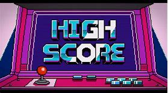

Uitleg
Catch the appels is een spel waar je de "appel" moet vangen die op een willeurige plek van het X-ass valt het Y-ass blijft het zelfde op 0 dus.
Score en levens
In het spel heb je 3 levens dus als je 3 keer het "appel"laat vallen dan ben je af en komt er game over te staan. Maar als je de appel vangt komt er een hartje te voorschijn op het micro;bit en laat het je score zien en ook bij elke keer als je het "appel" vangt gaat er 10ms af van het variable pauzetime wat er voor zorgt dat de appel steeds sneller valt en ook moeilijker wordt.
programma
in de "hele tijd"blok heb ik 4 if-statements gebruikt 1 die controlleert of de X-ass van de appelsprite en de X-ass van de playersprite zelfde is en of de Y-ass van hun beide het zelfde is dat betekent dus dat je het hebt gevangen. 1 if-statement die controlleert of de appelsprite de ass van Y 4 heeft geraakt dus dat je het niet hebt gevangen dan verrandert de variable leven met -1. En 1 if-statement die de variable leven in de gaten houdt dus zodra die 0 is is het game over.
